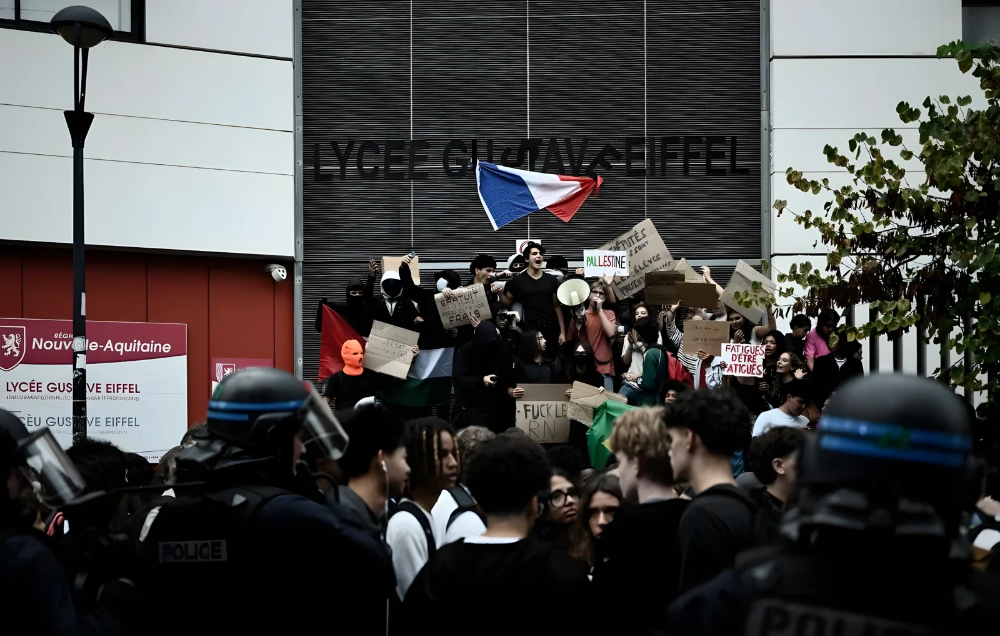

Parti du lycée Saint-Exupéry de Créteil le 18 septembre 2026, le mouvement de blocage des lycées a gagné toute la France en quelques jours. Le 30 septembre, le ministre de l'Intérieur Laurent Nuñez comptait 356 établissements touchés et 625 interpellations dans la journée, la veille 338 établissements selon le ministère de l'Éducation nationale, mais plus de 400 lycées bloqués selon l'Union syndicale lycéenne (USL) et l'Union étudiante. Le 1er octobre, l'« acte II » du mouvement a entraîné une trentaine d'universités et poussé le Premier ministre Sébastien Lecornu à réunir une cellule interministérielle de crise, à sept mois de la présidentielle et en pleine contestation du budget 2027. Une grande manifestation nationale est appelée pour le 6 octobre.
Tout commence dans le Val-de-Marne. Le 17 septembre, les enseignants du lycée Saint-Exupéry de Créteil font grève contre le manque de moyens et de personnels, plusieurs postes n'étant pas pourvus. Le lendemain, 18 septembre, les élèves bloquent à leur tour leur établissement. Le 21 septembre, des députés de La France insoumise, dont Louis Boyard, viennent sur place, puis appellent à étendre le mouvement.
Les réseaux sociaux font le reste. Un entretien de huit élèves de Saint-Exupéry avec le média Booska-P atteint 1,4 million de vues sur TikTok le 24 septembre, et les appels à bloquer circulent sur Snapchat et Instagram. Viginum, le service de l'État chargé de détecter les ingérences numériques étrangères, n'a relevé aucune « amplification artificielle » par des acteurs étrangers. Les 24 et 25 septembre, une soixantaine de lycées franciliens sont déjà perturbés.
Le 28 septembre, le mouvement quitte l'Île-de-France pour Marseille, Lille, le Rhône, le Var ou les Alpes-Maritimes : 180 établissements sont touchés et 164 personnes sont interpellées. Le 29, jour de grève dans la fonction publique, le ministère de l'Éducation nationale recense 338 établissements perturbés, dont 45 totalement bloqués et 46 victimes de tentatives de blocage ; l'USL et l'Union étudiante parlent, elles, de plus de 400 lycées bloqués. Le 30, Laurent Nuñez annonce 356 établissements touchés, dont 250 qui ne l'étaient pas la veille, soit environ un lycée sur dix, et 625 interpellations : « On constate une extension du mouvement ».
Le 1er octobre, l'USL et l'Union étudiante appellent à de nouveaux blocages dans les lycées et les facs. L'Union étudiante revendique alors une trentaine de campus touchés (Paris, Strasbourg, Marseille, Lyon, Reims, Poitiers, Nanterre…), « le meilleur démarrage de mobilisation depuis longtemps » selon sa porte-parole Sabrine Kharbach, quand six universités seulement étaient bloquées le premier jour de la mobilisation contre la réforme des retraites en 2023.
| Date | Pouvoirs publics | Syndicats |
|---|---|---|
| 1er oct. | Cellule interministérielle de crise, 13 h, ministère de l'Intérieur | Une trentaine de facs bloquées (Union étudiante) |
| 30 sept. | 356 touchés ; 625 interpellations ; 83 policiers et gendarmes blessés | — |
| 29 sept. | 338 touchés dont 45 bloqués ; 440 interpellations | « 400 lycées bloqués » (USL, Union étudiante) |
| 28 sept. | 180 établissements touchés ; 164 interpellations | — |
« Les légitimer ou appeler, dans ce contexte, à étendre les blocages, c'est mettre en danger nos élèves comme les agents publics. C'est irresponsable. »
— Édouard Geffray, ministre de l'Éducation nationale, 29 septembre 2026Grande manifestation nationale appelée par l'USL et l'Union étudiante.
« Acte II » : blocages des lycées et des universités. Le hall du lycée Nelson-Mandela de Nantes est incendié. Cellule interministérielle de crise réunie par Sébastien Lecornu.
356 établissements touchés, 625 interpellations. À Bordeaux, incidents devant le lycée Gustave-Eiffel : feux de poubelles, tirs de mortiers, gaz lacrymogènes.
Journée de grève de la fonction publique contre le gel du point d'indice. 440 interpellations dans les blocages lycéens.
Un lycéen est blessé au visage à Saint-Ouen-l'Aumône (Val-d'Oise) par un tir de lanceur de balles de défense d'un policier : l'IGPN est saisie.
Circulaire de Laurent Nuñez et d'Édouard Geffray aux préfets et aux recteurs : interpeller les auteurs de délits ; en cas de blocage total, intervention après concertation avec le chef d'établissement (contenu connu par la presse, non publié officiellement).
Une soixantaine de lycées d'Île-de-France sont perturbés. Le ministre de l'Éducation Édouard Geffray dénonce une « instrumentalisation politique » de la jeunesse par des députés LFI.
Premier blocus par les élèves de Saint-Exupéry.
Grève des enseignants au lycée Saint-Exupéry de Créteil. Le même jour, Sébastien Lecornu annonce dans Le Figaro un budget 2027 comportant un effort d'environ 54 milliards d'euros.
Le mouvement n'a pas de plateforme unique, mais l'USL le résume ainsi : remplacer les professeurs absents, obtenir davantage de moyens et des conditions d'apprentissage dignes. Selon les établissements, s'y ajoutent des classes surchargées (parfois 32 à 35 élèves), des emplois du temps jugés écrasants (de 8 h à 18 h pour certains), des bâtiments dégradés et surchauffés, la restauration, le manque d'infirmières, de psychologues et de personnels de vie scolaire, et le stress de Parcoursup, dénoncé comme source d'inégalités.
Les chiffres officiels donnent un socle à ces griefs : selon la DEPP, le service statistique du ministère, 9,8 % des heures d'enseignement n'ont pas été assurées en 2024-2025 dans le second degré public, dont 7,5 points pour cause de non-remplacement d'enseignants absents ; la proportion atteint 10 % dans les établissements les plus défavorisés contre 7 % dans les plus favorisés. Édouard Geffray a lui-même reconnu une très grande difficulté à remplacer les absents et jugé légitimes certaines revendications. Ces griefs scolaires s'ajoutent aux inquiétudes sur l'école française que le classement PISA 2025 avait déjà mises en lumière.
À ces revendications éducatives se greffent d'autres thèmes, variables d'une ville à l'autre. À Bordeaux, des lycéens ont affiché leur opposition à la montée de l'extrême droite, et ceux du lycée Magendie ont mis en avant la Palestine et l'austérité, d'après la presse locale. Le gouvernement évoque lui-même des revendications allant de problèmes locaux jusqu'au Moyen-Orient. Côté étudiant, l'Union étudiante réclame le maintien des APL, qui doivent être gelées dans le projet de budget, et dénonce Parcoursup et MonMaster comme des outils de sélection sociale.
« J'appelle le gouvernement à entendre la colère des lycéens et cesser d'envoyer des policiers face aux jeunes qui se mobilisent. »
— Sophie Binet, secrétaire générale de la CGT, 29 septembre 2026Le bilan humain pèse sur le débat. Selon les autorités, 119 élèves et personnels de l'Éducation nationale (85 élèves et 34 personnels) ont été blessés au 30 septembre, et 83 policiers et gendarmes l'ont été pour la seule journée du 30 septembre, après 48 la veille. Laurent Nuñez a signalé sept incidents impliquant de l'acide chlorhydrique dirigé contre les forces de l'ordre et affirmé que toutes les interventions policières étaient « justifiées » ; la CGT demande l'arrêt de l'envoi de policiers face aux lycéens, et des plaintes ont été déposées contre des policiers pour usage excessif de la force. Les interpellations, qui concernent surtout des mineurs, visent des dégradations et des violences contre des agents de l'autorité publique ; les deux tiers de celles du 29 septembre ont donné lieu à des gardes à vue.
Le 1er octobre, les incidents se durcissent : incendie du hall du lycée Nelson-Mandela de Nantes, véhicule des marins-pompiers incendié à Marseille, où le proviseur du lycée Victor-Hugo et son adjoint sont aspergés d'essence (le suspect affirmant n'avoir pas visé le proviseur), journaliste de M6 agressé. Les transports sont interrompus à Marseille et les tramways à Strasbourg. Le garde des Sceaux Gérald Darmanin réclame une réponse pénale « ferme ». Édouard Geffray annonce une plateforme de concertation ouverte à tous les lycéens et demande des cours à distance dans les établissements où les blocages empêchent d'accueillir les élèves en sécurité.
| Acteur | Position |
|---|---|
| USL, Union étudiante | Appellent à bloquer lycées et facs, puis à manifester le 6 octobre |
| Fage | Première organisation étudiante, rejoint le mouvement |
| Éducation nationale | Revendications en partie « légitimes », violences condamnées |
| Intérieur / Justice | Fermeté, circulaire du 26 septembre, réponse pénale |
| LFI | Soutient le mouvement ; accusée d'« instrumentalisation » |
| CGT, SNES-FSU | La CGT demande d'entendre les lycéens ; le SNES-FSU appelle à éviter l'escalade |
Le blocus s'inscrit dans un climat tendu. Le 17 septembre, Sébastien Lecornu a présenté un budget 2027 qu'il qualifie de « le plus rigoureux depuis très longtemps » : environ 54 milliards d'euros d'effort, avec notamment un gel du point d'indice des fonctionnaires. Huit syndicats de la fonction publique ont répondu par la grève du 29 septembre. Les lycéens y voient la preuve que l'école, comme les services publics, fait les frais de l'austérité ; le gouvernement, lui, dénonce une instrumentalisation de la jeunesse à l'approche de l'élection.
La polémique politique est vive : le maire LFI de Saint-Denis, Bally Bagayoko, a déclaré que « la violence, à un moment donné, peut être légitime » ; Laurent Nuñez a jugé ces propos « très graves » et une plainte a été déposée. Au-delà, la question de fond reste entière : comment répondre à des griefs réels (absence de professeurs, locaux dégradés) alors que le budget impose des économies ? Le rendez-vous du 6 octobre dira si ce mouvement, né dans un lycée de Créteil, s'installe ou s'essouffle.